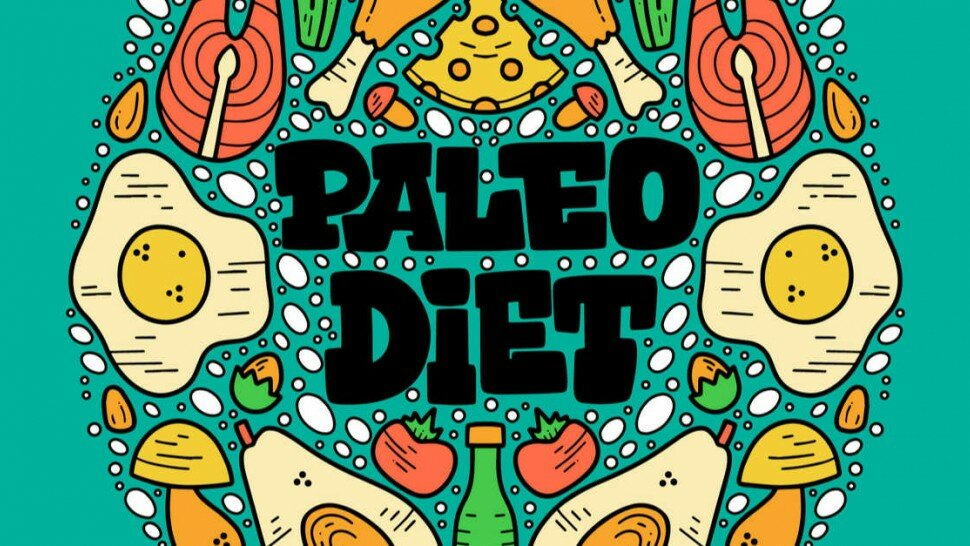
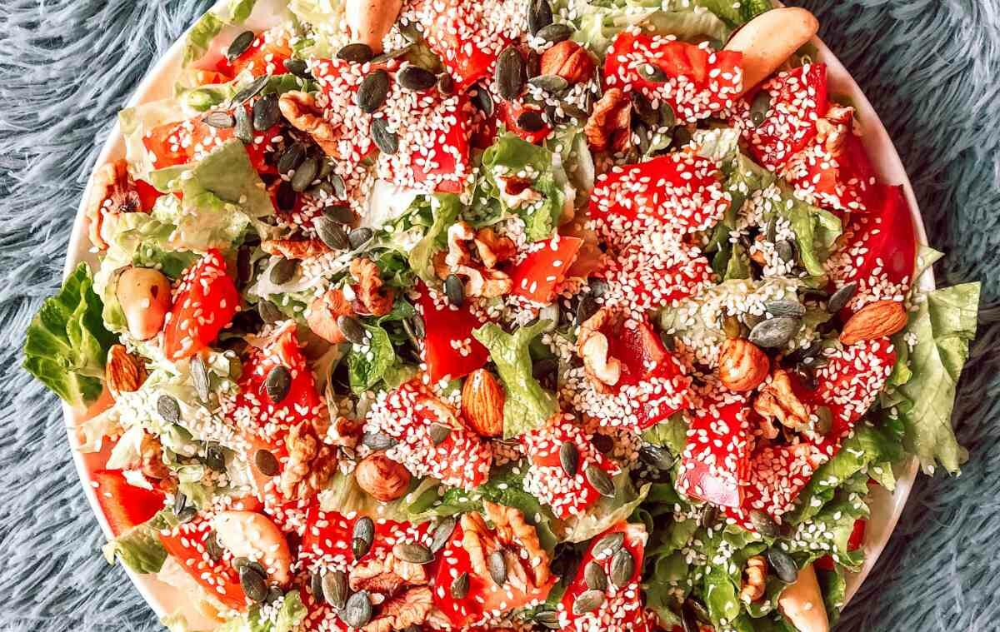

Le régime paléo, ou régime paléolithique, est conçu pour ressembler à ce que les ancêtres humains des chasseurs-cueilleurs mangeaient il y a des milliers d'années.
Cependant, bien qu'il soit impossible de savoir exactement ce que les ancêtres humains mangeaient dans les différentes parties du monde peuplées, les chercheurs scientifiques pensent que leur régime alimentaire se composait d'aliments entiers. En suivant un régime alimentaire complet et en menant une vie physiquement active, les chasseurs-cueilleurs avaient vraisemblablement des taux beaucoup plus faibles de maladies liées au mode de vie, telles que l'obésité, les allergies, le diabète et les maladies cardiaques. D'ailleurs,, plusieurs études suggèrent que ce régime peut entraîner une perte de poids importante et des améliorations majeures de la santé. Néanmoins, il est vital de consulter un professionnel de la santé avant de commencer ce régime, afin d'être certain qu'il convienne et de savoir la durée possible de suivi du régime.
Le régime paléo est calqué sur les régimes que les chasseurs-cueilleurs sont susceptibles d'avoir suivis. Bien qu'il n'y ait pas une seule façon de suivre le régime paléo, l'idée de base prioritaire est d'éviter les aliments transformés et de se concentrer plutôt sur des aliments sains et entiers.
Ainsi, les aliments paléo comprennent la viande, le poisson, les œufs, les graines, les noix, les fruits et les légumes, ainsi que les graisses et les huiles saines. Il faut éviter les aliments transformés, les céréales et le sucre, mais il est possible d'ajouter quelques aliments sains modernes comme le beurre nourri à l'herbe et les céréales sans gluten.
Pour commencer le régime paléo, voici un article pour mieux saisir les contraintes, les bases d'un menu et de ce que contient de façon général le régime paléolithique.

Sommaire
- Introduction
- Régime paléolithique : la diète ancestrale
- Régime paléolithique
- Régime Paléo - TéléMatin - Vidéo
- Comment fonctionne le régime paléo ?
- Comment débuter le régime paléo ?
- Liste des aliments autorisés dans le régime paléo
- Quels menus et recettes du petit déjeuner au dîner ?
- Exemple de menu typique du régime paléo
- Qu'est-ce que le régime paléo cétogène ?
- Que dit la recherche sur le régime paléo ?
- Ce type de régime est-il efficace ?
- Pourquoi le régime paléo peut avoir un effet anti-inflammatoire ?
- Calcium et régime paléo
- Acné et régime paléo
- Maladies cardiaques et régime paléo
- Perte de poids et régime paléo
- Prise de masse et régime paléo
- Comment un régime paléo affecte-t-il votre santé intestinale ? (EN) - Vidéo
- Régime trop riche en protéines et en graisses
- Sources

L’humanité a soif de progrès et en ce qui concerne la nourriture l’évolution est très rapide depuis l’avènement de l'agriculture. Lorsque nous examinons les nombreux régimes alimentaires existants - comme le régime sans gluten, le régime paléo ou le régime cétogène [1] - et la façon dont nous choisissons de nous nourrir, il devient de plus en plus évident que nous perdons certaines valeurs au nom de l’efficacité.
On le sait, la restauration rapide et la malbouffe ne sont pas qu’une question de santé mais bien un phénomène socio-culturel. Ainsi, la plupart des aliments qui se trouvent dans les rayons des épiceries modernes - principalement en Occident - seraient méconnaissables pour nos arrière-grands-parents.
D’autre part, à mesure que le temps nous éloigne de l'âge et de la mémoire de nos ancêtres, la distance entre nos régimes augmente et fait naître des inconvénients qui se ressentent sur l’état de santé de tous. Les facteurs de risque de ce nouveau mode de vie provoquent une augmentation de certains troubles digestifs et maladies (diabète [2], obésité [3], hypertension artérielle, maladie du foie, etc.).
Régime paléolithique : la diète ancestrale
Régime paléolithique
Comment débuter le régime paléo ?

Adopter le régime paléo ne devrait pas se faire sans les recommandations et conseils d’un professionnel de la santé.
Le régime paléo comprend des viandes maigres (blanc de poulet, volaille sans peau, etc.), du poisson, des fruits, des légumes, des noix et des graines. Les partisans du régime mettent l'accent sur le choix de fruits et légumes à faible indice glycémique [13] (critère de classement des aliments contenant des glucides, basé sur leurs effets sur la glycémie).
Comment faire le régime paléo ?
Soulignons qu’il y a débat sur plusieurs aspects du régime paléo. Effectivement, on ne sait pas quels aliments existaient réellement à l'époque, ni la variation des régimes alimentaires selon la région, ou comment les fruits et légumes modernes ressemblent peu ou prou aux versions sauvages préhistoriques. En raison de ces différences, il n'y a pas un seul vrai régime paléo à l’époque actuelle.
Par exemple, bien que les pommes de terre blanches aient été reconnues comme étant disponibles à l'époque Paléolithique, elles sont généralement évitées dans le régime paléo en raison de leur indice glycémique élevé. Les aliments transformés et hautement transformés sont également techniquement interdits en raison de l'accent mis sur les aliments frais. Mais certains régimes paléo autorisent les fruits et légumes congelés car le processus de congélation pourrait préserver la plupart des nutriments.
Dans l'ensemble, ce régime alimentaire est riche en protéines, modéré en graisses (graisses insaturées et acides gras saturés), faible à modéré en glucides [14] (absence des glucides à indice glycémique élevé), riche en fibres et faible en sodium et en sucres raffinés. Les graisses monoinsaturées et polyinsaturées, et les graisses oméga-3 proviennent de poissons marins, d'avocat, d'huile d'olive, de noix et certaines graines.
D’autre part, le comptage des calories et la taille des portions ne sont pas mis en valeur dans l’alimentation paléo. Aussi, certains plans proposés pour ce régime permettent quelques repas non paléo par semaine, en particulier au début du régime, pour améliorer l'observance générale.

Qu'est-ce que le régime paléo cétogène ?
Que dit la recherche sur le régime paléo ?
Maladies cardiaques et régime paléo
Perte de poids et régime paléo
Sources
- Le régime cétogène : bienfaits et dangers, https://www.le-guide-sante.org/actualites/nutrition/regime-cetogene-bienfaits-dangers
- Le diabète, https://www.who.int/topics/diabetes_mellitus/fr/
- Obésité et surpoids chez l'enfant et l'adolescent dans le monde : une épidémie mondiale !, https://www.le-guide-sante.org/actualites/nutrition/obesite-surpoids-enfant-adolescent-epidemie-mondiale
- Le régime "locavore", délices et délires, par Corinne Lesnes, https://www.lemonde.fr/idees/article/2008/05/21/le-regime-locavore-delices-et-delires-par-corinne-lesnes_1047775_3232.html
- Pourquoi le régime méditerranéen est bon pour notre intestin ?, https://blognutritionsante.com/2018/05/08/bienfaits-regime-mediterraneen-intestin/
- Maladies épidémiques et pandémiques, https://www.who.int/csr/disease/fr/
- Actualités Cancer, Le Guide Santé, https://www.le-guide-sante.org/actualites/cancer
- L'époque Paléolithique, https://www.inrap.fr/le-paleolithique-10196
- Paleolithic Nutrition Twenty-Five Years Later, Melvin Konner & Stanley Boyd Eaton, https://www.researchgate.net/publication/49665440_Paleolithic_Nutrition_Twenty-Five_Years_Later
- La chasse et la cueillette aujourd'hui. Un champ de recherche anthropologique ?, https://www.persee.fr/doc/rural_0014-2182_1982_num_87_1_2869
- Un plan pour améliorer l’état de santé de la population, https://www.mangerbouger.fr/PNNS
- Périodes de l’Histoire humaine, https://www.inrap.fr/periodes
- Glucides. Descripteur MeSH, http://www.chu-rouen.fr/page/glucides
- Les glucides, https://www.le-guide-sante.org/actualites/nutrition/glucides-macronutriments-nutrition
- Les lipides et acides gras : le guide, https://www.le-guide-sante.org/actualites/nutrition/lipides-acides-gras-macronutriments-apport-energetique
- Café : bienfaits et méfaits sur la santé, https://www.le-guide-sante.org/actualites/nutrition/cafe-bienfaits-mefaits-sante-nutrition
- L'activité physique est un traitement : interview d'un médecin du sport, https://www.le-guide-sante.org/actualites/forme-et-bien-etre/activite-physique-interview-medecin-sport
- Vitamines : carences et excès, https://www.le-guide-sante.org/actualites/nutrition/vitamines-carences-exces-surdosage-ep-2
- Influence of Paleolithic diet on anthropometric markers in chronic diseases: systematic review and meta-analysis, https://nutritionj.biomedcentral.com/articles/10.1186/s12937-019-0457-z
- Long-term Paleolithic diet is associated with lower resistant starch intake, different gut microbiota composition and increased serum TMAO concentrations. European Journal of Nutrition, 2019; DOI: 10.1007/s00394-019-02036-y, https://link.springer.com/article/10.1007/s00394-019-02036-y
- A low-carbohydrate high-fat diet increases weight gain and does not improve glucose tolerance, insulin secretion or β-cell mass in NZO mice. Nutrition & Diabetes, 2016; 6 (2): e194 DOI: 10.1038/nutd.2016.2, https://www.nature.com/articles/nutd20162
- Intermittent fasting, Paleolithic, or Mediterranean diets in the real world: exploratory secondary analyses of a weight-loss trial that included choice of diet and exercise, The American Journal of Clinical Nutrition, Volume 111, Issue 3, March 2020, Pages 503–514, https://doi.org/10.1093/ajcn/nqz330
- Protéines et acides aminés : que faut-il savoir ? https://www.le-guide-sante.org/actualites/nutrition/proteines-acides-amines-que-faut-il-savoir
- Clostridioides difficile, https://www.sciencedirect.com/science/article/abs/pii/S0966842X18302002
- Modification de la nomenclature des actes de biologie médicale pour les actes de diagnostic biologique des infections à Clostridium difficile, https://www.has-sante.fr/upload/docs/application/pdf/2016-07/argumentaire_clostridium.pdf
- Les régimes alimentaires : que faut-il savoir ? https://www.le-guide-sante.org/actualites/nutrition/regimes-alimentaires-que-faut-il-savoir
- A High-Fat/High-Protein, Atkins-Type Diet Exacerbates Clostridioides (Clostridium) difficile Infection in Mice, whereas a High-Carbohydrate Diet Protects. mSystems, 2020; 5 (1) DOI: 10.1128/mSystems.00765-19, https://msystems.asm.org/content/5/1/e00765-19
- Les aliments anti-cancer : régime et conseils. https://www.le-guide-sante.org/actualites/nutrition/aliments-anti-cancer-regime-conseils